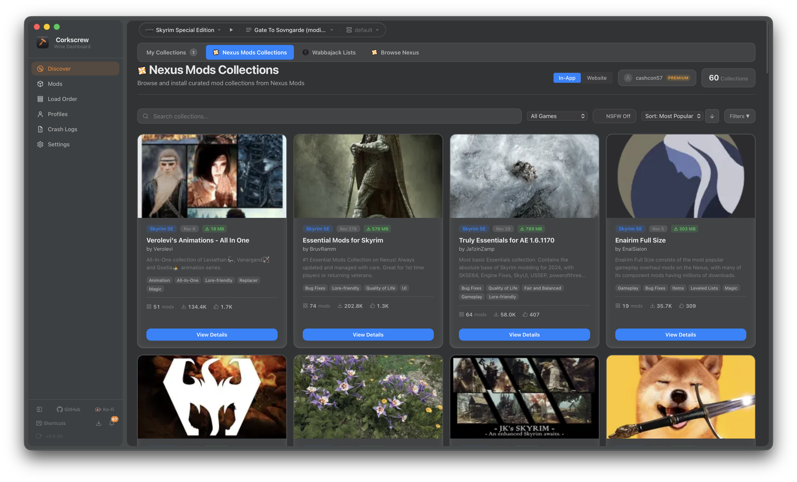
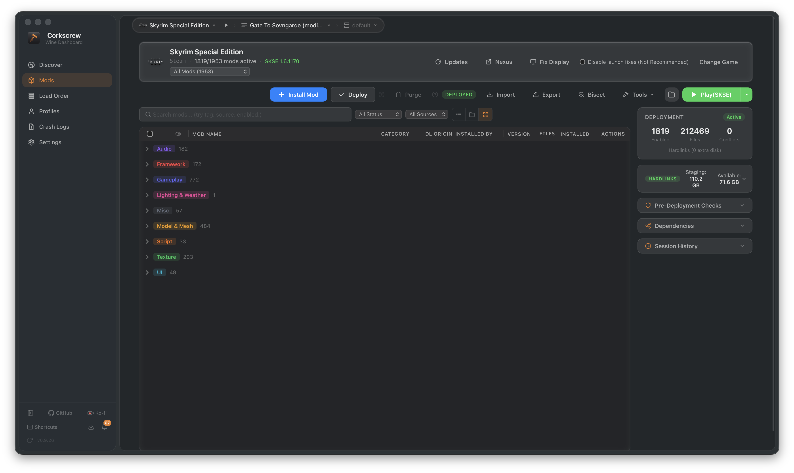
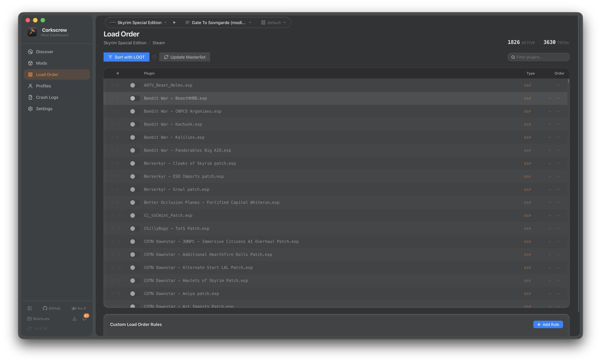
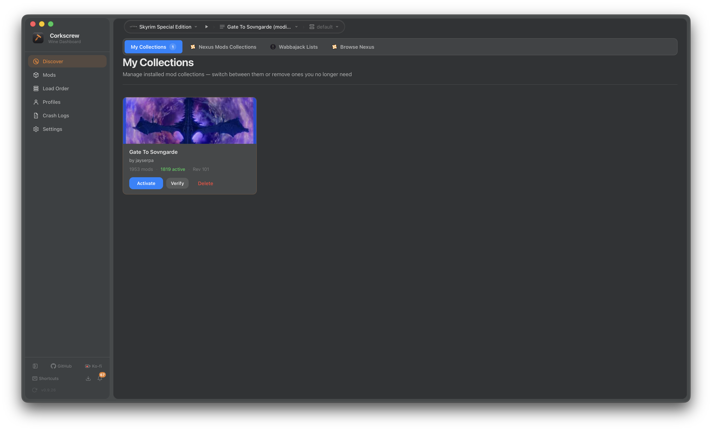
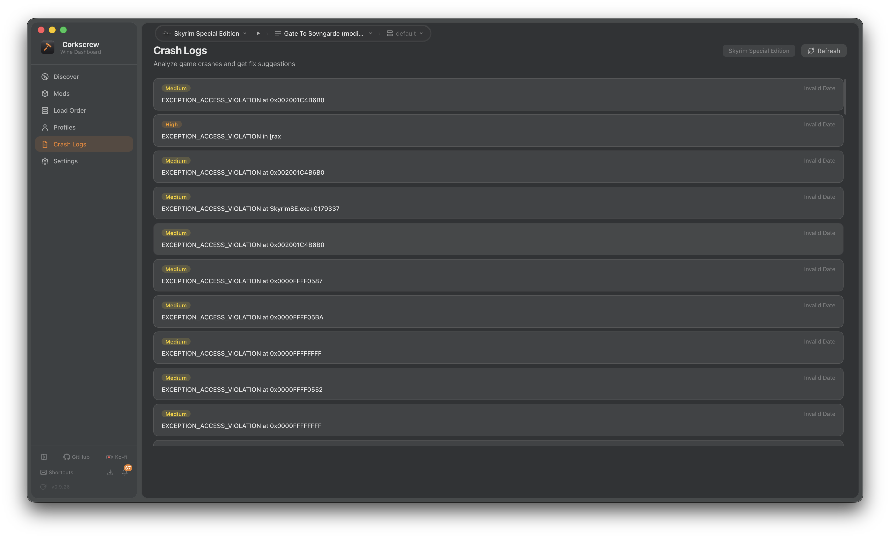
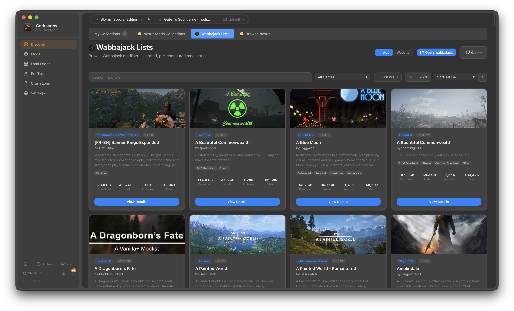

The first native mod manager for macOS, SteamOS, and Linux. Runs your mods through CrossOver, Wine, Whisky, or Proton—no Windows required.

Three steps. That's it.
Point it at your game
Corkscrew auto-detects CrossOver, Whisky, Proton, and Lutris bottles on macOS, SteamOS, Ubuntu, Fedora, and more.
Browse & install mods
One-click Nexus Mods downloads. FOMOD wizards handled natively. Drag to reorder.
Hit play
SKSE, Engine Fixes, and load order sorted automatically. Launch straight from Corkscrew.
macOS, SteamOS, and Linux gamers don't mod Skyrim. Not because they can't run it—because they can't manage mods.
MO2 and Vortex are Windows-only. Running them through Wine or Proton is fragile, slow, and breaks on every update. Nobody wants to manage a 300-mod load order inside a virtual desktop on their Mac or Steam Deck.
A mod manager that actually runs here.
- Native binary for macOS (Apple Silicon & Intel), SteamOS, Ubuntu, Fedora, Arch, and more. No Wine wrapper, no Electron.
- One-click Nexus SSO. Download with manager, full API.
- SKSE, Engine Fixes, Address Library auto-deployed.
- LOOT plugin sorting and conflict detection built in.
Everything you need, nothing you don't.
Drag, drop, done.
Install from Nexus with one click or drop archives in. FOMOD wizards, BSA unpacking, and conflict resolution handled natively. Sort hundreds of mods with real-time search and category filters.
FOMODNXM Links7z / RAR / ZIP
Plugin sorting that works.
Integrated LOOT engine sorts plugins automatically. See master dependencies, detect conflicts, fix load order before it crashes. Drag to override when you know better.
LOOTDrag ReorderConflict Map
Nexus Collections. One click. Beta
Install curated mod packs with automated dependency resolution. Every mod downloaded, configured, and ordered correctly. No manual intervention required.
CollectionsAuto-InstallProfiles
Crash? We've got answers.
Structured crash log viewer with stack traces mapped to your mod list. Know which mod broke your game in seconds, not hours of bisecting.
Stack TracesMod AttributionSession Tracking
Wabbajack modlists
on macOS & Linux. Yes, really. Beta
Full 7-phase install pipeline: metadata resolution, archive downloads, BSA/BA2 packing, DDS texture transforms, binary delta patches, FOMOD evaluation, and hardlink deployment. Hundreds of mods from a single click.

Engine Fixes, Auto-Deployed
Custom Wine-compatible SSE Engine Fixes patches 60+ crash sites with VEH recovery. Deployed automatically, updated silently.
CrossOver, Whisky, Proton, Lutris
Auto-detects your Wine compatibility layer on macOS, SteamOS, and Linux. Works with Steam, GOG, and manual installs across all distributions.
Crash Logs, Decoded
Built-in crash log viewer with stack traces mapped to your mod list.
Open Source, GPL-3.0
Every line is public. No telemetry, no accounts required. Built by a modder who got tired of waiting for someone else to solve this.
Profiles & Presets
Swap setups instantly. Vanilla, lightly modded, 400-plugin chaos.
Fast because it has to be.
Corkscrew manages thousands of files across a Wine/Proton boundary on macOS, SteamOS, and Linux. Every millisecond of overhead is one you notice. That's why the backend is Rust and the frontend is Svelte—the two fastest options in their class.
Built in public, shipped fast.
First commit
Can a Tauri app install a Skyrim mod into a CrossOver bottle on macOS? Turns out, yes. The prototype handled archive extraction, file deployment, and Wine prefix detection in under a week.
Nexus Mods integration
Full SSO authentication via WebSocket, NXM deep-link handling, and download-with-manager support. One-click installs from the Nexus website straight into your Wine bottle.
FOMOD installer
Complete XML wizard implementation with conditional flags, image previews, multi-step flows, and nested option groups. Handles the same FOMOD configs that MO2 and Vortex use.
SSE Engine Fixes for Wine
A custom fork of SSEEngineFixesForWine—a Wine-compatible SKSE plugin that patches 60+ crash sites with vectored exception handling, sentinel page recovery, and code-cave hooks. Auto-deployed by Corkscrew on every launch.
LOOT integration
Native libloot FFI binding for plugin sorting, master validation, and conflict detection. 3,700+ metadata entries. Sorts your entire load order in milliseconds.
Nexus Collections & Wabbajack
Automated modlist installation with a full 7-phase pipeline: metadata resolution, multi-source archive downloads (Nexus, MEGA, Google Drive), BSA/BA2 packing, DDS texture transforms, binary delta patches, FOMOD evaluation, and hardlink deployment.
Public beta
v0.9 released for macOS (Apple Silicon & Intel) and Linux (SteamOS, Ubuntu, Fedora, Arch via AppImage, .deb, and .rpm). Fully open source under GPL-3.0.
Starfield & Fallout 4 support
Expanding beyond Skyrim. Plugin management, load order sorting, and archive handling for Bethesda's newer titles running through Wine and Proton.
Mod conflict visualization
Visual conflict maps showing exactly which files overlap between mods. See winners and losers at a glance, drag to reprioritize.
Steam Workshop bridge
Subscribe to Workshop mods and manage them alongside Nexus mods in a unified interface. Full metadata sync and update tracking.
"I built Corkscrew because I wanted to mod Skyrim on my Mac and there was literally nothing that worked. MO2 through Wine was a nightmare. So I learned Rust, learned Tauri, reverse-engineered the game engine for Wine compatibility, and built what I needed. Whether you're on macOS, SteamOS, or any Linux distro—if you're here, you probably wanted the same thing."